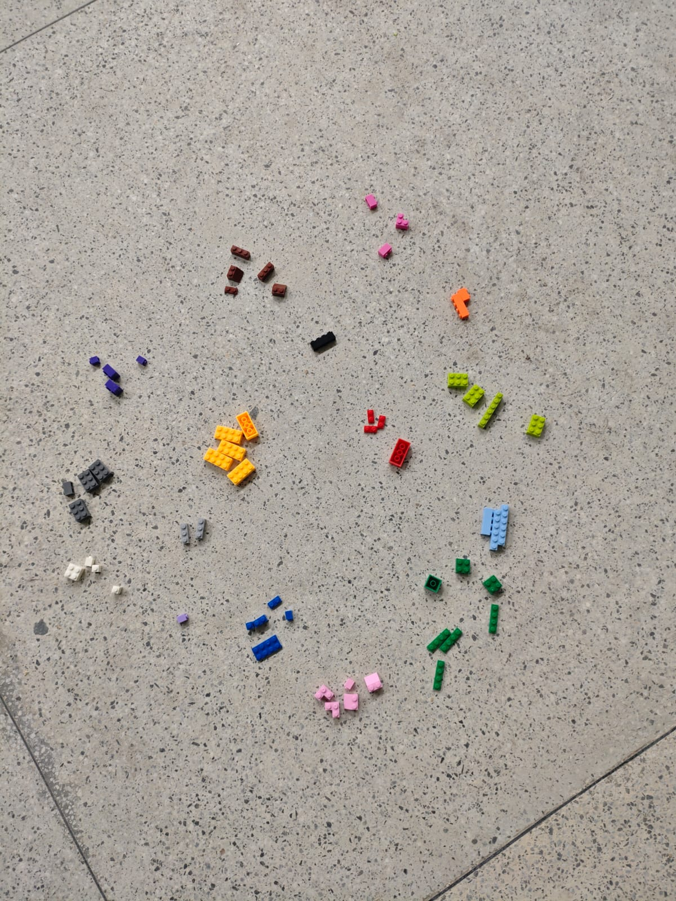

Módulo 3.1 - Exercício Diversidade funcional com LEGO
Ecologia de Comunidades (versão sem R)
Objetivo
Na aula, a cor da peça definiu a “espécie” (diversidade taxonômica). Agora vamos usar a forma e o tamanho das peças como traços funcionais para responder: o que as espécies da minha comunidade fazem, e quantas fazem a mesma coisa?
Todos os cálculos podem ser feitos com calculadora ou Excel/Planilhas Google. Não é necessário R.
Material: a planilha de amostragem do seu grupo (as mesmas 100 peças usadas nos módulos anteriores, Partes 1 a 6) e os dados das três comunidades fotografadas no Exercício do Módulo 1 (Parte 7).
Entrega: individual, com as tabelas preenchidas, os cálculos (print da planilha ou fotos do caderno) e as respostas da Parte 6 e 7.
Conceitos-chave
| Conceito | Definição curta | No nosso LEGO |
|---|---|---|
| Espécie | Unidade taxonômica | Cor da peça |
| Traço funcional | Característica que influencia o desempenho/papel da espécie | Forma (categórica) e número de pinos (numérico) |
| Grupo funcional | Conjunto de espécies com traços semelhantes | Categoria de forma (tijolo, placa, telha, inclinada, outras) |
| Redundância funcional | Várias espécies exercendo a mesma função | Várias cores na mesma categoria de forma |
| Média ponderada pela comunidade (CWM) | Valor “típico” do traço, ponderado pela abundância | Média de pinos por peça da comunidade |
Exemplo resolvido (comunidade fictícia de 20 peças)
Use este exemplo como modelo. Confira cada conta antes de fazer a sua.
Tabela de contagens (cor × forma) e média de pinos por peça de cada cor:
| Cor (espécie) | Tijolo | Placa | Inclinada | Total (\(N_i\)) | \(p_i\) | Pinos (média) |
|---|---|---|---|---|---|---|
| Vermelho | 5 | 1 | 0 | 6 | 0,30 | 4,0 |
| Azul | 3 | 2 | 1 | 6 | 0,30 | 3,0 |
| Amarelo | 0 | 4 | 0 | 4 | 0,20 | 6,0 |
| Verde | 1 | 0 | 3 | 4 | 0,20 | 2,0 |
| Total por forma | 9 | 7 | 4 | 20 | 1,00 | |
| \(p\) da forma | 0,45 | 0,35 | 0,20 |
Fórmulas usadas
- Shannon: \(H' = -\sum p_i \ln p_i\)
- Pielou: \(J = H'/\ln S\)
- Simpson (1 − D): \(1 - \sum p_i^2\)
- CWM do traço: \(\text{CWM} = \sum p_i x_i\)
- Dispersão funcional (variância ponderada): \(\sum p_i (x_i - \text{CWM})^2\)
Resultados do exemplo
| Medida | Taxonômica (cores) | Funcional (formas) |
|---|---|---|
| Riqueza (\(S\) ou \(S_F\)) | 4 | 3 |
| Shannon \(H'\) | 1,366 | 1,049 |
| Pielou \(J\) | 0,985 | 0,955 |
| Simpson \(1-D\) | 0,740 | 0,635 |
- CWM de pinos = 0,30·4 + 0,30·3 + 0,20·6 + 0,20·2 = 3,70; média simples das cores = 3,75 (a diferença mostra o efeito das cores dominantes).
- Amplitude funcional (maior − menor média de pinos) = 6 − 2 = 4.
- Dispersão funcional = 0,027 + 0,147 + 1,058 + 0,578 = 1,81 (desvio-padrão = 1,35).
- Redundância funcional: nº de cores por forma → Tijolo = 3, Placa = 3, Inclinada = 2; média = 8/3 = 2,67 cores por grupo funcional.
- Perda de espécie: removendo a cor mais abundante (Vermelho), a riqueza de cores cai de 4 para 3 (−25 %), mas as 3 formas continuam presentes (−0 % de grupos funcionais) e \(H'_F\) passa de 1,049 para 1,079. A redundância “protegeu” a função.
Aplicando a uma comunidade real
Parte 1 — Montar a matriz cor × forma

Na sua planilha de amostragem, cada linha é uma peça com as colunas Cor, Forma e Pinos (número de pinos visíveis; telhas lisas = 0). Use as categorias de forma definidas em sala.
Preencha a Tabela 1 (linhas = cores que apareceram; colunas = formas).
Dica Excel (nomes em português; no Planilhas Google use COUNTIFS/AVERAGEIF):
=CONT.SES(A:A; "Vermelho"; B:B; "Tijolo") // peças vermelhas do tipo tijolo
=MÉDIASE(A:A; "Vermelho"; C:C) // média de pinos das peças vermelhas| Cor | Tijolo | Placa chata | Inclinada | Outras | Total (\(N_i\)) | \(p_i\) | Pinos (média da cor) |
|---|---|---|---|---|---|---|---|
| Total por forma | 100 | 1,00 | |||||
| \(p\) da forma |
Verificação: a soma dos totais por cor e a soma dos totais por forma devem dar 100.
Parte 2 — Diversidade taxonômica × diversidade funcional
Calcule, com as proporções \(p_i\) das cores e depois com as proporções das formas:
Tabela 2
| Medida | Taxonômica (cores) | Funcional (formas) |
|---|---|---|
| Riqueza (\(S\) e \(S_F\)) | ||
| Shannon \(H'\) | ||
| Pielou \(J\) | ||
| Simpson \(1-D\) |
Dica Excel: crie uma coluna com =p*LN(p), some a coluna e troque o sinal. Para Simpson, =1-SOMARPRODUTO(p;p).
Parte 3 — Traço numérico: número de pinos
Tabela 3
| Medida | Valor |
|---|---|
| CWM de pinos \(= \sum p_i x_i\) (use a coluna “Pinos (média)” da Tabela 1) | |
| Média simples das médias das cores (sem ponderar) | |
| Amplitude funcional (maior − menor média de pinos entre as cores) | |
| Dispersão funcional \(= \sum p_i (x_i - \text{CWM})^2\) |
Dica Excel: =SOMARPRODUTO(p; x) para o CWM.
Parte 4 — Redundância funcional
Tabela 4
| Forma (grupo funcional) | Nº de cores que ocorrem nela | Tem só 1 cor? (S/N) |
|---|---|---|
| Tijolo | ||
| Placa | ||
| Telha | ||
| Inclinada | ||
| Outras | ||
| Média de cores por grupo funcional |
Dica Excel: =CONT.SE(coluna_da_forma; ">0") conta quantas cores têm pelo menos uma peça naquela forma.
Parte 5 — Simulação de perda de espécies
Simule dois cenários a partir da Tabela 1, apagando linhas (cores) e recalculando:
- Cenário A: remover a cor mais abundante.
- Cenário B: remover as 3 cores mais raras.
Tabela 5
| Medida | Original | Cenário A | Cenário B |
|---|---|---|---|
| Riqueza de cores (\(S\)) | |||
| Nº de grupos funcionais (\(S_F\)) | |||
| \(H'\) funcional | |||
| CWM de pinos | |||
| % de espécies perdidas | 0 | ||
| % de grupos funcionais perdidos | 0 |
Dica: nos cenários, recalcule os totais por forma e as proporções, sem as linhas removidas.
Parte 6 — Interpretação
Responda em 2 a 4 linhas cada (use números das suas tabelas).
- Sua comunidade é mais diversa taxonômica ou funcionalmente? Por que \(S_F\) nunca pode ser maior que o número de categorias de forma definidas, e o que isso implica para comparar \(S\) e \(S_F\)?
- \(H'\) e \(J\) funcionais foram mais altos ou mais baixos que os taxonômicos? O que isso diz sobre a dominância de algumas formas?
- Compare o CWM de pinos com a média simples. Qual cor “puxa” o valor típico da comunidade? O que aconteceria com o CWM se essa cor desaparecesse?
- Existem grupos funcionais representados por uma única cor? O que isso significa para a vulnerabilidade da função?
- No Cenário A e no Cenário B, a perda de espécies foi acompanhada de perda de função? Relacione com o conceito de redundância funcional e a hipótese do seguro (insurance hypothesis).
- Duas comunidades podem ter a mesma riqueza de espécies e funcionamentos muito diferentes. Dê um exemplo usando suas tabelas ou o exemplo resolvido.
- Dê um exemplo real (Caatinga, Mata Atlântica ou outro bioma brasileiro) em que a perda de uma única espécie poderia causar perda de função. Qual seria o “traço” equivalente à forma da peça?
- Cite uma limitação de usar apenas a forma e o número de pinos como traços. Que outros traços (cor? material? peso?) você incluiria e por quê?
Bônus: Índice Rao Q em miniatura
O índice de Rao (\(Q\)) combina abundância e distância funcional entre pares de espécies:
\[Q = \sum_{i}\sum_{j} d_{ij}\, p_i\, p_j\]
Tome três grupos funcionais da sua Tabela 1 (ex: Tijolo, Placa, Inclinada), use a média de pinos de cada grupo como traço e calcule \(d_{ij} = |x_i - x_j|\) (diferença absoluta entre as médias). Some todos os pares (cada par aparece duas vezes na soma dupla, ou calcule uma vez e multiplique por 2).
Exemplo: grupos A, B, C com \(p\) = 0,5; 0,3; 0,2 e pinos = 4, 2, 8 → \(Q = 2\,[\,|4-2|(0,5)(0,3) + |4-8|(0,5)(0,2) + |2-8|(0,3)(0,2)\,] = 2\,[0,30 + 0,40 + 0,36] = 2,12\).
Compare o seu \(Q\) com a dispersão funcional da Parte 3: as duas medidas contam a mesma história?
Agora, vamos analisar 3 comunidades
Parte 7 — Aplicação às três comunidades fotografadas (Módulo 1)
Agora vamos repetir as análises nas três comunidades (foto_1, foto_2 e foto_3) do Exercício do Módulo 1. Aqui os dados são contagens por cor, e os traços funcionais são atribuídos por espécie (cor), como acontece em um banco de traços real (uma tabela espécie × traço).
Dados de abundância (peças por cor em cada foto)
| cor | foto_1 | foto_2 | foto_3 |
|---|---|---|---|
| verde_limao | 3 | 4 | 3 |
| verde_escuro | 3 | 7 | 5 |
| azul | 5 | 4 | 3 |
| azul_claro | 1 | 3 | 2 |
| roxo_escuro | 2 | 4 | 5 |
| lilas | 1 | 1 | 0 |
| rosa_magenta | 4 | 3 | 2 |
| rosa_claro | 1 | 5 | 5 |
| vermelho | 5 | 5 | 6 |
| laranja | 3 | 2 | 4 |
| amarelo | 3 | 6 | 4 |
| marrom | 1 | 5 | 6 |
| branco | 4 | 5 | 3 |
| cinza_claro | 2 | 2 | 1 |
| cinza_escuro | 4 | 5 | 2 |
| preto | 1 | 1 | 1 |
O mesmo arquivo em formato CSV (para colar no Excel/Planilhas): Ou seja, copie abaixo o texto e cole no excel ou Google Sheets. Ou, preencha as cálulas uma a uma se não conseguir colar.
cor,foto_1,foto_2,foto_3
verde_limao,3,4,3
verde_escuro,3,7,5
azul,5,4,3
azul_claro,1,3,2
roxo_escuro,2,4,5
lilas,1,1,0
rosa_magenta,4,3,2
rosa_claro,1,5,5
vermelho,5,5,6
laranja,3,2,4
amarelo,3,6,4
marrom,1,5,6
branco,4,5,3
cinza_claro,2,2,1
cinza_escuro,4,5,2
preto,1,1,1
Verificação: confira se você obteve \(N\) = 43, 62 e 52 peças e \(S\) = 16, 16 e 15 cores nas fotos 1, 2 e 3 (lilas não ocorre na foto_3).
Traços das espécies (cores)
| cor | Grupo funcional | Luminosidade (1 = muito escura, 5 = muito clara) |
|---|---|---|
| verde_limao | Verdes | 4 |
| verde_escuro | Verdes | 2 |
| azul | Azuis | 3 |
| azul_claro | Azuis | 4 |
| roxo_escuro | Roxo-rosa | 2 |
| lilas | Roxo-rosa | 4 |
| rosa_magenta | Roxo-rosa | 3 |
| rosa_claro | Roxo-rosa | 5 |
| vermelho | Quentes | 3 |
| laranja | Quentes | 4 |
| amarelo | Quentes | 5 |
| marrom | Neutros | 2 |
| branco | Neutros | 5 |
| cinza_claro | Neutros | 4 |
| cinza_escuro | Neutros | 2 |
| preto | Neutros | 1 |
Trate o grupo funcional como traço categórico (equivalente à forma da peça) e a luminosidade como traço numérico (equivalente ao número de pinos).
Dicas Excel: traga os traços para a tabela de abundância com =PROCV(cor; tabela_de_traços; coluna; 0); some abundâncias por grupo com =SOMASE(coluna_do_grupo; "Verdes"; coluna_da_foto).
7.1 Diversidade taxonômica (cores)
Tabela 6
| Medida | foto_1 | foto_2 | foto_3 |
|---|---|---|---|
| \(N\) (peças) | |||
| \(S\) (cores) | |||
| Shannon \(H'\) | |||
| Pielou \(J\) | |||
| Simpson \(1-D\) |
7.2 Diversidade funcional categórica (grupos funcionais)
Some as abundâncias das cores de cada grupo funcional em cada foto e calcule as medidas com as proporções dos grupos.
Tabela 7
| Grupo funcional | foto_1 | foto_2 | foto_3 |
|---|---|---|---|
| Verdes | |||
| Azuis | |||
| Roxo-rosa | |||
| Quentes | |||
| Neutros | |||
| Total | |||
| Riqueza funcional (\(S_F\)) | |||
| Shannon funcional \(H'_F\) | |||
| Pielou funcional \(J_F\) | |||
| Simpson funcional \(1-D_F\) |
7.3 Traço numérico (luminosidade)
Tabela 8
| Medida | foto_1 | foto_2 | foto_3 |
|---|---|---|---|
| CWM de luminosidade \(= \sum p_i x_i\) | |||
| Média simples da luminosidade das cores presentes | |||
| Amplitude funcional (maior − menor luminosidade entre as cores presentes) | |||
| Dispersão funcional \(= \sum p_i (x_i - \text{CWM})^2\) |
7.4 Redundância funcional
Tabela 9 (número de cores presentes em cada grupo funcional)
| Grupo funcional | foto_1 | foto_2 | foto_3 |
|---|---|---|---|
| Verdes | |||
| Azuis | |||
| Roxo-rosa | |||
| Quentes | |||
| Neutros | |||
| Média de cores por grupo |
7.5 Simulação de perda de espécies
Recalcule as medidas depois de apagar linhas da tabela de abundância:
- Cenário A: remover a cor
vermelho. - Cenário B: remover todo o grupo Azuis (
azuleazul_claro).
Tabela 10
| Medida | Cenário | foto_1 | foto_2 | foto_3 |
|---|---|---|---|---|
| Riqueza de cores (\(S\)) | Original | |||
| A | ||||
| B | ||||
| Grupos funcionais (\(S_F\)) | Original | |||
| A | ||||
| B | ||||
| \(H'_F\) | Original | |||
| A | ||||
| B | ||||
| CWM de luminosidade | Original | |||
| A | ||||
| B |
7.6 Interpretação
- Compare as três fotos pelas Tabelas 6 e 7. Qual comunidade é mais diversa taxonômica e funcionalmente? As diferenças entre fotos são grandes ou pequenas? Considere que \(N\) difere entre as fotos (43, 62 e 52 peças).
- A diversidade funcional (\(H'_F\)) tem valores mais próximos entre as fotos do que a taxonômica (\(H'\))? O que isso sugere sobre a relação entre diversidade de espécies e de funções?
- Qual grupo funcional domina cada foto? O que a dominância de um grupo implica para o CWM de luminosidade (Tabela 8)?
- Em qual foto a redundância funcional (Tabela 9) é menor? Que grupo ficaria mais vulnerável à perda de uma única cor?
- No Cenário A, a perda de
vermelhoreduziu \(S_F\)? E no Cenário B? Explique a diferença com os conceitos de redundância funcional e hipótese do seguro. - No Cenário B, o CWM de luminosidade mudou muito? Se o CWM quase não mudou, isso significa que a função foi preservada? Discuta a diferença entre o valor médio do traço e a cobertura de grupos funcionais.
- Proponha um traço real (Caatinga ou outro bioma) cujo valor médio permaneceria quase igual após a perda de uma espécie, enquanto um grupo funcional inteiro desapareceria.
Entrega e correção sugerida
| Item | Peso |
|---|---|
| Tabelas 1–5 corretas e verificadas (comunidade do grupo) | 30 % |
| Tabelas 6–10 corretas e verificadas (três fotos) | 30 % |
| Cálculos apresentados (planilha ou caderno) | 15 % |
| Interpretação (Partes 6 e 7.6) | 25 % |
| Bônus (Rao Q) | +10 % |